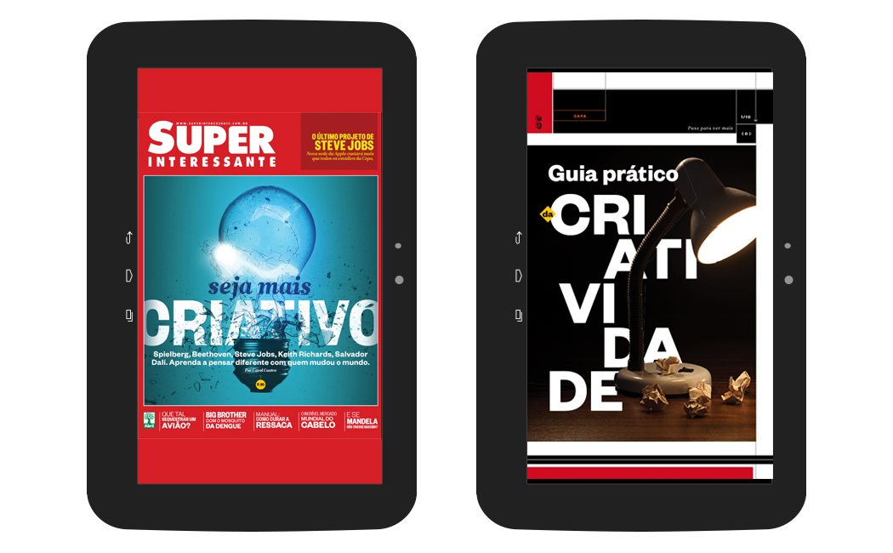
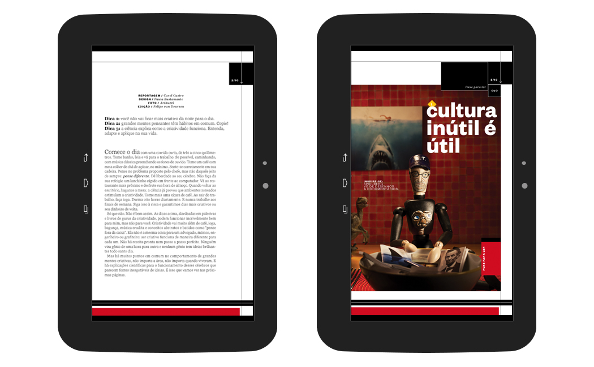
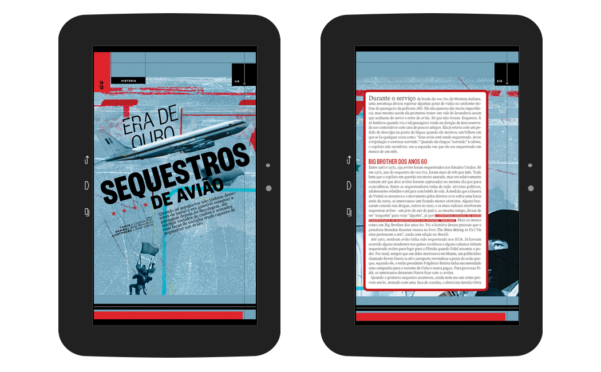
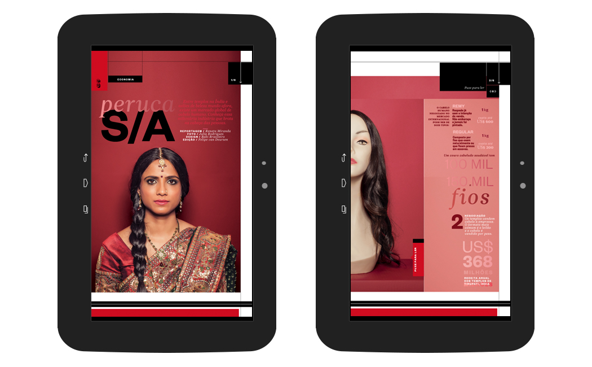
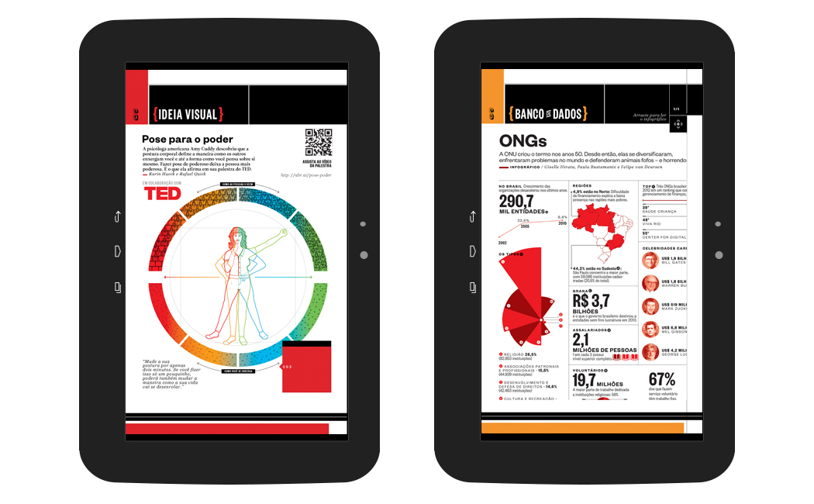
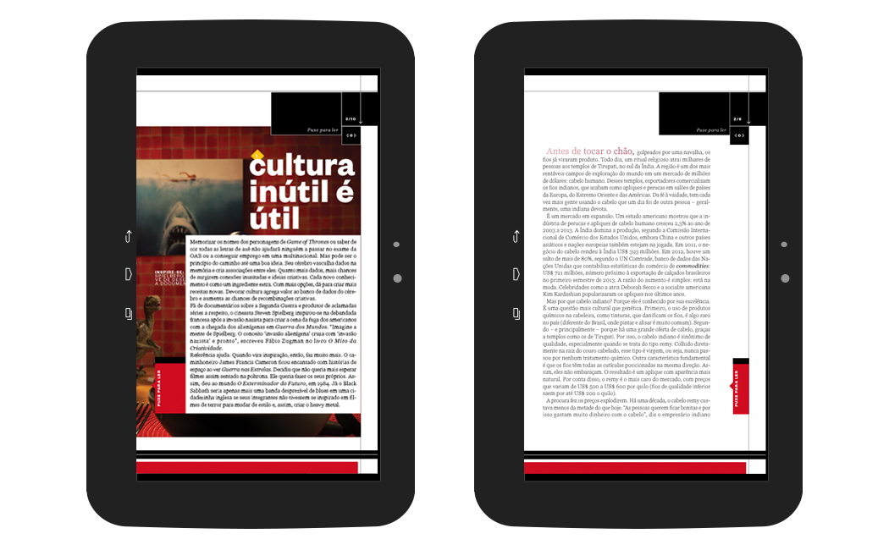

2012
Ed. Abril
Em 2012, tive a oportunidade de criar uma edição inteira da revista Superinteressante para o iPad. Foi uma experiência empolgante, que me permitiu explorar o universo da publicação digital e ampliar os limites da narrativa.
Aproveitar as capacidades interativas do iPad abriu um mundo novo de criatividade e engajamento. Pude mergulhar no conteúdo multimídia, integrando vídeos, animações e áudio para enriquecer a experiência do leitor — de pop-ups a transições e efeitos de paralaxe, cada recurso buscava cativar e informar.
Tags de atuação:
Processo de design editorial e interação para iPad
Cenário
A proposta era fazer a edição inteira da Super Interessante para iPad, com o tema criatividade. Não era adaptar uma pauta do papel: era decidir, matéria por matéria, o que continuava texto e o que pedia outro formato.
Objetivo
Fazer a edição funcionar como uma coisa só — capa, guia prático, reportagens, infográficos e seções — e aproveitar o que só a tela permite (vídeo, áudio, animação, pop-ups e paralaxe) sem perder a leitura. O desafio era equilibrar novidade e leitura.
Linha do tempo do projeto
-
01
A edição inteira
Edição completa sobre criatividade: capa, guia prático e seções, com decisões sobre o que ficava no texto e o que pedia tela.
-
02
Narrativa e ritmo
Aberturas ilustradas, pull quotes e páginas longas pensadas para a leitura no tablet.
-
03
Dados que se exploram
Mapas interativos, gráficos animados e infográficos em camadas para explorar os dados.
-
04
Acabamento e interação
Vídeo, áudio, animação e paralaxe no Adobe Publishing Suite, com ajuste página a página até a publicação.
A edição inteira
A capa e o guia prático sobre criatividade abriam a edição. A partir dali, cada seção tinha um papel na narrativa: reportagens, entrevistas, dados e passatempos.
Foi um trabalho de edição, não só de design: escolher o que entrava, o que ficava de fora e o que ganharia tratamento especial na tela.

Narrativa e ritmo
As reportagens longas ganharam aberturas ilustradas, pull quotes e páginas que quebravam o ritmo da leitura. Na tela, o texto precisava de mais respiro do que no papel.
As páginas de texto foram pensadas para a leitura no tablet: coluna única, tipografia maior e margens generosas, com blocos que ajudam a localizar a informação sem cansar.


Dados que se exploram
Os infográficos foram o coração da edição. Mapas interativos, gráficos animados e infográficos em camadas permitiam explorar os dados em vez de só olhar para eles.
O desafio era manter a clareza no meio de tanta possibilidade: cada número precisava continuar legível, mesmo com camadas, movimento e toque.


Acabamento e interação
A edição foi montada no Adobe Publishing Suite, que permitiu criar layouts responsivos, otimizar imagens e organizar o conteúdo de cada matéria.
O acabamento era o que garantia a coerência: tipografia, margens, navegação e o comportamento de cada interação, tudo ajustado página a página até a publicação. Vídeo, áudio, animação e paralaxe entravam onde ajudavam a contar a história — nunca como enfeite.

Aprendizados
Criar uma edição inteira para tablet foi uma experiência rica e desafiadora: explorar novas formas de contar histórias e de apresentar informação de maneira mais envolvente e interativa.
O Adobe Publishing Suite e os infográficos interativos foram fundamentais para o resultado, e a parceria com a Editora Abril garantiu a qualidade do conteúdo e a entrega dentro do prazo. Foi uma honra trabalhar com uma empresa tão reconhecida no mercado editorial.